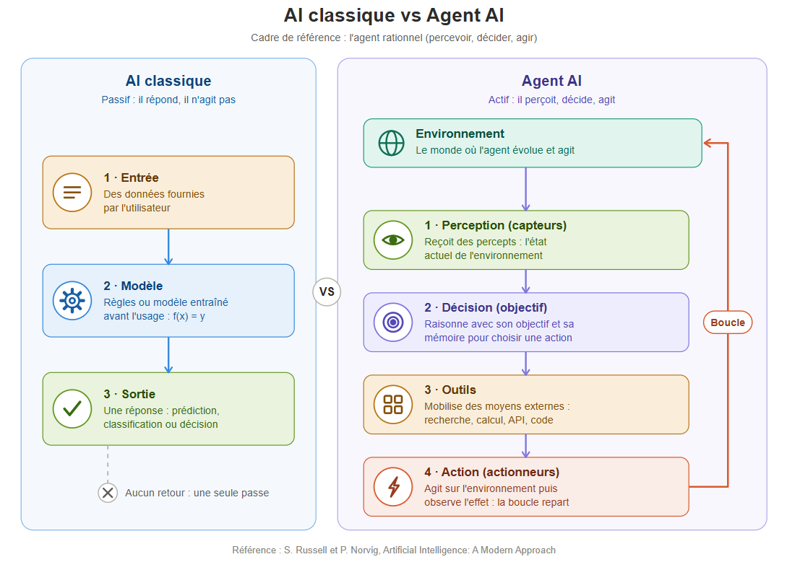

On parle de AI classique et agent AI , mais qu’est ce qui fait véritablement la différence ?
On parle de AI classique et agent AI , mais qu’est ce qui fait véritablement la différence ?
Depuis l’expansion récente de l’intelligence artificielle comme ChatGPT, Claude et j’en passe, nous avons l’habitude de poser des questions à une IA, de lui demander de rédiger ou corriger un texte, de résumer un document ou de nous aider à résoudre un problème. Certains sont même accusés d’avoir utilisé l’AI pour écrire entièrement pour écrire des livres, exemple (C'était ça ou mourir) de Thélyson Orélien.
Lire l'article